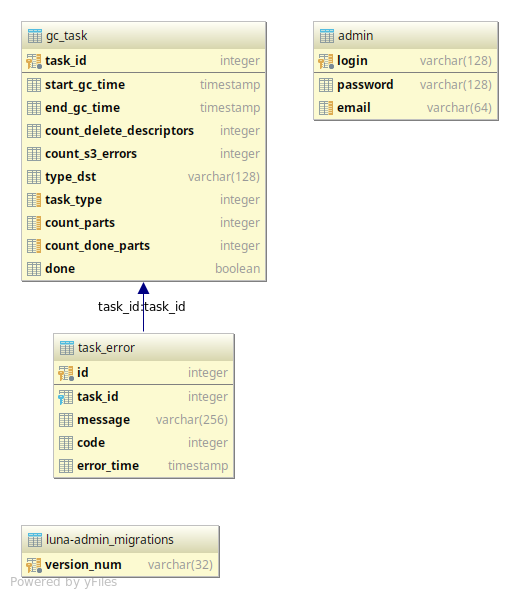

Database¶
We support Oracle and Postgres databases.
DB scheme.¶
Admin database models.
-
class
luna_admin.app.admin_db.models_admin.Admin(**kwargs)[source]¶ Admin table
-
email¶ admin email
-
login¶ admin login
-
password¶ admin password
-
-
class
luna_admin.app.admin_db.models_admin.GCTask(**kwargs)[source]¶ Admin tasks.
-
count_delete_descriptors¶ count delete faces for gc
-
count_done_parts¶ done parts count
-
count_parts¶ part of task count
-
count_s3_errors¶ count s3 errors for gc
-
end_gc_time¶ end task time
-
start_gc_time¶ start task time
-
task_id¶ task id
-
task_type¶ task type (2 - gc non-linked
-
type_dst¶ target of task (all or account + id)
-